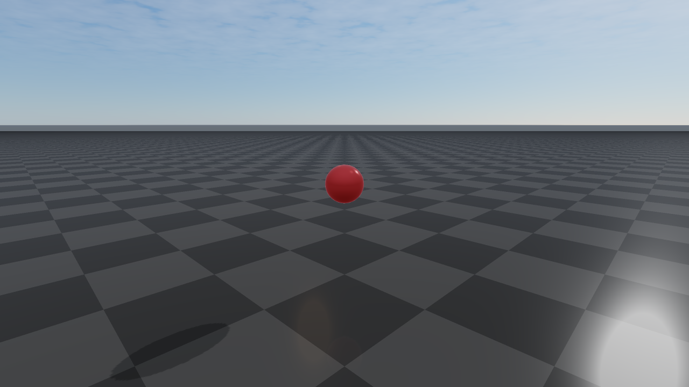

rayrai Visualizer
Overview
rayrai is an in-process C++ renderer for RaiSim. It renders into an offscreen OpenGL texture and is designed to embed in custom UIs (ImGui, Qt, etc.) or headless pipelines. RaisimUnity and RaisimUnreal are no longer supported; rayrai is the supported visualization path. It runs inside the simulation process and exposes direct access to render targets, picking, and custom visuals.
Key characteristics:
In-process rendering with direct OpenGL texture access, plus the standalone TCP viewer for
RaisimServerscenesFast/Balanced/High/Ultraquality presets with explicit settings for shadows, post-process, render scale, and texture filteringglTF/GLB visual-scene import with PBR materials, normal maps, authored lights, HDR image-based lighting, reflection probes, and planar reflections
Weather and scene effects: time-of-day sky, fog/local fog, rain, snow, lightning diagnostics, wet/snow material response, projected decals, and irradiance volumes
Capture and diagnostics helpers for screenshots, debug passes, GPU pass timings, exposure/luminance analysis, and JSON reports
Support for RGB/depth sensor alignment, GPU LiDAR slices, point clouds, coordinate frames, camera frustums, and picking
Direct ImGui/SDL2 integration patterns and headless/offscreen workflows
The public API lives in the raisin namespace (note the spelling). The primary entry
point is raisin::RayraiWindow.
rayrai topics
- Render quality, tone mapping, color grading
- Lighting, shadows, and HDR/IBL
- PBR materials
- Custom visuals, instancing, and scene helpers
- Post-process effects
- Weather and atmospherics
- Capture, diagnostics, and headless rendering
- Sensors and depth/LiDAR
- Example targets
- Performance notes and the C++ API reference
Dependencies
rayrai depends on SDL2, OpenGL, glbinding, glm, assimp, stb, and imgui. The installed
package in rayrai/<OS> ships the headers and CMake config for these dependencies.
Included binary (recommended)
For most users, the easiest way to use rayrai is the included TCP viewer
binary at rayrai/<OS>/bin/rayrai_tcp_viewer. It connects to a
running RaisimServer and provides full PBR rendering, scene inspection,
interactive pause / step / force application, screenshots, and session
recording.
./rayrai/<OS>/bin/rayrai_tcp_viewer
See Rayrai TCP Viewer for the full UI tour, command-line options, the sim-control workflow, authentication setup, and the wire-format reference for writing custom clients.
Build and link
rayrai installs a CMake package under rayrai/<OS>. Add it to
CMAKE_PREFIX_PATH and link the rayrai target.
find_package(rayrai CONFIG REQUIRED)
add_executable(my_app main.cpp)
target_link_libraries(my_app PRIVATE rayrai)
In practice, you will also set the Raisim prefix (for example, -DCMAKE_PREFIX_PATH)
to include both raisim/<OS> and rayrai/<OS>.
Minimal usage
The typical workflow is:
Create a RaiSim world.
Construct a
raisin::RayraiWindowfor that world.Update the renderer each frame and consume the output texture.
#include <memory>
#include <raisim/World.hpp>
#include <rayrai/RayraiWindow.hpp>
int main() {
auto world = std::make_shared<raisim::World>();
raisin::RayraiWindow viewer(world, 1280, 720);
// glm::vec4 colour overload (preferred in new code).
auto sphere = viewer.addVisualSphere("goal", 0.2, glm::vec4(0.9f, 0.2f, 0.2f, 1.0f));
sphere->setPosition(0.0, 0.0, 1.0);
while (true) {
world->integrate();
viewer.update(1280, 720, false, 0, 0, false);
unsigned int tex = viewer.getImageTexture();
(void)tex; // use the texture in your UI or pipeline
}
}
{kind=link}

If you are integrating with an existing OpenGL context, see Capture, diagnostics, and headless rendering for
RayraiWindow::createOffscreenGlContext / makeOffscreenContextCurrent and a
full headless capture-to-PNG example.
Threading contract
RayraiWindow is single-threaded by default. Construct it with the default
RayraiWindow::ThreadingMode::SingleThread when the simulation and renderer
live on one thread, which is the normal RaiSim workflow.
ThreadingMode::MultiThread is an explicit opt-in for batch/offscreen render
setups that create one RayraiWindow per worker thread, each with its own
OpenGL context. Do not mix threading modes inside one process; all windows must
use the same mode. A threading-mode mismatch at construction is treated as a
fatal error (RSFATAL).
Lifetime and error model
RayraiWindow does not own the raisim::World passed to its constructor.
The world must outlive the window. Either the raisim::World* or
std::shared_ptr<raisim::World> constructor is acceptable; the shared-pointer
overload uses a non-owning deleter internally.
Mutation methods that target an entity by name — for example,
removeVisualObject, clearAdditionalLights, clearLocalFogVolumes —
are silent no-ops when the target does not exist. They never throw and never
return a failure code, so callers can invoke them unconditionally without an
existence check.
Resource-creation methods signal failure with a zero GL handle, a null
shared_ptr, or an isComplete() == false PbrEnvironment and log an
error to stderr. The list includes loadColorTextureWithTiling,
loadDataTextureWithTiling, loadHdrEquirectangularCubemap,
createHdrIrradianceCubemap, createHdrPrefilteredEnvironmentCubemap,
createSplitSumBrdfLut, PbrEnvironment::loadFromHdrFile,
addVisualMesh, addVisualCustomMesh, and importVisualScene.
Built-in shader programs are registered during construction and compiled
lazily on first use. shaderWarmupDiagnostics reports the measured
compile/link cost and linked program count so both startup stalls and
first-use stalls (when an effect is enabled for the first time) can be
tracked.
Example: custom visuals + background color
This example adds a custom box, renders an RGB texture each frame, and reads the
image texture handle for UI integration. New code should prefer explicit color-range
APIs such as setBackgroundColorRgb255 or setBackgroundColorLinear.
#include <memory>
#include <raisim/World.hpp>
#include <rayrai/RayraiWindow.hpp>
int main() {
auto world = std::make_shared<raisim::World>();
world->addGround();
raisin::RayraiWindow viewer(world, 1280, 720);
viewer.setBackgroundColorRgb255({40, 45, 55, 255});
auto box = viewer.addVisualBox("marker", 0.4, 0.2, 0.1,
glm::vec4(0.9f, 0.6f, 0.1f, 1.0f));
box->setPosition(1.0, 0.0, 0.3);
while (true) {
world->integrate();
viewer.update(1280, 720, false, 0, 0, false);
unsigned int colorTex = viewer.getImageTexture();
(void)colorTex; // feed into your UI or pipeline
}
}

Where to go next
Choose a render preset and tone curve — Render quality, tone mapping, color grading
Light the scene and set up HDR/IBL reflections — Lighting, shadows, and HDR/IBL
Apply PBR materials and authored asset imports — PBR materials
Add visual primitives, instanced visuals, and overlays — Custom visuals, instancing, and scene helpers
Enable cinematic post-process / SSR / SSAO / DoF — Post-process effects
Drive weather and atmospherics — Weather and atmospherics
Run headlessly, capture screenshots, and run diagnostics — Capture, diagnostics, and headless rendering
Align to RGB/depth/LiDAR sensors and pick objects — Sensors and depth/LiDAR
Write a custom TCP client — Rayrai TCP Viewer
List of shipped example targets — Example targets
Performance notes and the full C++ API reference — Performance notes and the C++ API reference